102 Statistical Concepts
TOC
- Misc
- Age Adjustment of per 100K rate
- Variance of a Proportion
- Terms
- Null Hypothesis Significance Testing (NHST)
- Bootstrapping
- Fundamentals
- geometric mean
- skewness
- kurtosis
- Understanding CI, sd, and sem Bars
- P-Value (aka Confidence Interval) Function
Misc
- Why would we not always use a non-parametric test so we do not have to bother about testing for normality? The reason is that non-parametric tests are usually less powerful than corresponding parametric tests when the normality assumption holds. Therefore, all else being equal, with a non-parametric test you are less likely to reject the null hypothesis when it is false if the data follows a normal distribution. It is thus preferred to use the parametric version of a statistical test when the assumptions are met.
- Age Adjustment of per 100K rate
.png)
- Allows communities with different age structures to be compared
- The crude (unadjusted)1994 cancer mortality rate in New York State is 229.8 deaths per 100,000 men. The age-adjusted rate is 214.7 deaths per 100,000 men.
- Notice that 214.7 isn’t 229.8*1 of course but the sum of all the individual age-group weighted rates.
- Process (Formulas in column headers)
- Calculate the disease’s rate per 100K for each age group
- Multiply the age-specific rates of disease by age-specific weights
- The weights are the proportion of the US population within each age group. (e.g. 0-14 year olds are 28.4% of the 1970 US population)
- The weighted rates are then summed over the age groups to give the (total) age-adjusted rate
- Variance of a proportion
- Assume that p applies equally to all n subjects
- (p × (1−p) ) / n
- Example
- Sample of 100 subjects where there are 40 females and 60 males
- 10 of the females and 30 of the males have the disease
- Marginal estimate of the probability of disease is 40/100 = 0.4
- Variance of the estimator assuming constant risk (i.e. assuming risk for females = risk for males)
- (prob_of_disease × prob_not_disease) / n = (0.4 × 0.6) / 100 = 0.0024
- p = (10 + 30) / 100 = 0.40
- (prob_of_disease × prob_not_disease) / n = (0.4 × 0.6) / 100 = 0.0024
- Assume p depends on a variable (e.g. sex)
- [p1,n2 × (p1 × (1 - p1)) / n1] + [p2,n2 × (p2 × (1 - p2)) / n2]
- Example
- Description same as above
- Adjusted marginal estimate of the probability of disease is
- (prop_female × prop_disease_female) + (prop_male × prop_disease_male)
- (0.4 × 0.25) + (0.6 × 0.5) = 0.4
- Same marginal estimate as before
- Variance of the estimator assuming varying risk (i.e. assumes risk for females != risk for males)
- 1st half of equation:
- prop_female2 × (prop_disease_female × prop_not_disease_female) / n_female = [0.42 × (0.25 × 0.74) / 40]
- 2nd half of equation
- prop_male2 × (prop_disease_male × prop_not_disease_male) / n_male = [0.62 × (0.5 × 0.5) / 60]
- 1st half + 2nd half = 0.00225
- Variance is smaller than before
- 1st half of equation:
- Assume that p applies equally to all n subjects
Terms
Coefficient of Variation (CV)- aka relative standard deviation (RSD) - aka Dispersion parameter - Measure of the relative dispersion of data points in a data series around the mean. Usually expressed as a percentage.
.png)
- While most often used to analyze dispersion around the mean, a quartile, quintile, or decile CV can also be used to understand variation around the median or 10th percentile, for example.
- Should only be used with variables that have minimum at zero (e.g. counts, prices) and not interval data (e.g celsius or fahrenheit)
- When the mean value is close to zero, the coefficient of variation will approach infinity and is therefore sensitive to small changes in the mean. This is often the case if the values do not originate from a ratio scale.
- A more robust possibility is the quartile coefficient of dispersion, half the interquartile range divided by the average of the quartiles (the midhinge)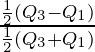
- For small samples (Normal Distribution)
- For log-normal distribution
- where σln is the standard deviation after a ln transformation of the data
Covariance - between two random variables is a measure of how correlated are their variations around their respective means
Kernel Smoothing - essence is the simple concept of a local average around a point, x; that is, a weighted average of some observable quantities, those of which closest to x being given the highest weights
Margin of Error (MoE) - the range of values below and above the sample statistic in a confidence interval.
Z-Score with confidence level γ ⨯ Standard Error
In general, for small sample sizes (under 30) or when you don’t know the population standard deviation, use a t-score to get the critical value. Otherwise, use a z-score.
- See Null Hypothesis Significance Testing (NHST) >> Misc >> Z-Statistic Table for an example
Example: a 95% confidence interval with a 4 percent margin of error means that your statistic will be within 4 percentage points of the real population value 95% of the time.
Example: a Gallup poll in 2012 (incorrectly) stated that Romney would win the 2012 election with Romney at 49% and Obama at 48%. The stated confidence level was 95% with a margin of error of ± 2. We can conclude that the results were calculated to be accurate to within 2 percentages points 95% of the time.
- The real results from the election were: Obama 51%, Romney 47%. So the Obama result was outside the range of the Gallup poll’s margin of error (2 percent).
- 48 – 2 = 46 percent
- 48 + 2 = 50 percent
- The real results from the election were: Obama 51%, Romney 47%. So the Obama result was outside the range of the Gallup poll’s margin of error (2 percent).
Normalization rescales the values into a specified range, typically [0,1]. This might be useful in some cases where all parameters need to have the same positive scale. However, the outliers from the data set are lost.
.png)
- Some functions have the option to normalize with range [-1, 1]
- Best option if the distribution of your data is unknown.
Parameter - describes an entire population (also see statistic)
P-Value - p-value(y) = Pr(T(y_rep) >= T(y) | H)
- H is a “hypothesis,” a generative probability model
- y is the observed data
- y_rep are future data under the model
- T is a “test statistic,” some pre-specified specified function of data
Sampling error is the difference between population parameter and the statistic that is calculated from the sample (such as the difference between the population mean and sample mean).
Standard Error of the Mean (SEM) - measures how far the sample mean (average) of the data is likely to be from the true population mean (Also see Fundamentals >> Interpreting s.d., s.e.m, and CI Bars)
- SEM = SD / √n
- assumes a simple random sample with replacement from an infinite population
- SEM = SD / √n
Standardization rescales data to fit the Standard Normal Distribution which has a mean (μ) of 0 and standard deviation (σ) of 1 (unit variance).
.png)
- Recommended for PCA and if your data is known to come from a Gaussian distribution.
Statistic - describes a sample (also see parameter)
Variance (σ2)- measures variation of a random variable around its mean.
Variance-Covariance Matrix - Square matrix containing variances of the fitted model’s coefficient estimates and the pair-wise covariances between coefficient estimates.
- Cov(β^) = (XTX)-1(MSE), where MSE = SSE/DFE = SSE/(n-p)
- Diagnonal is the variances, and the rest of the values are covariances
- There’s also a variance/covariance matrix for error terms
- Example
x <- sin(1:100)
y <- 1 + x + rnorm(100)
MSE <- sum(residuals(lm(y ~ x))^2)/98 # where 98 is n-2
vcov_mat <- MSE * solve(crossprod(cbind(1, x)))- “vcov_mat” =
vcov(lm(y ~ x)
Null Hypothesis Significance Testing (NHST)
- Misc
- If your statistic value is greater than the critical value, then it’s significant and you reject H0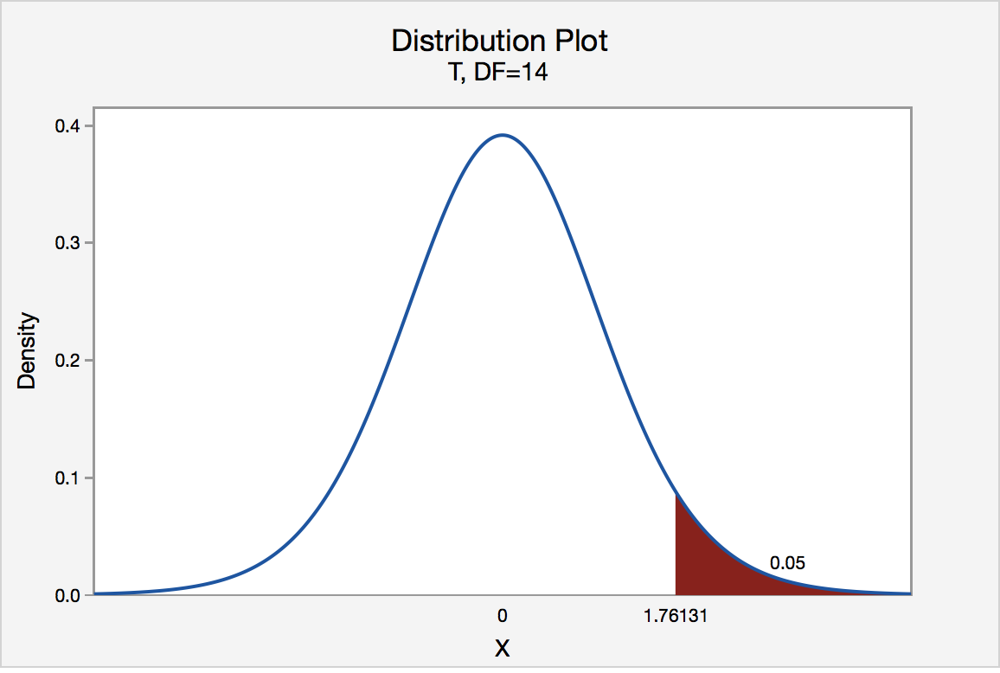
- Think in terms of a distribution with statistic values on the x-axis, and greater than the critical value means you’re in the tail (one-sided)
- T-Statistic Table
- Z-Statistic Table
- Example: 95% CI → α = 100% - 95% = 0.05 → α/2 (1-tail) = 0.025
- 1 - 0.025 = 0.975 (subtract from 1 because the z-score table cells are for the area left of the critical value
- The z-score is 1.96 for a 95% CI
.png)
- Z-score comes from adding the row value with the column value that has the cell value of our area (e.g. 0.975) left of the critical value
- If the area was between 0.97441 and 0.97500, then the z-score would be the row value, 1.9, added to the column value that’s half way between 0.05 and 0.06, which results in a z-score of 1.955
- Example: 95% CI → α = 100% - 95% = 0.05 → α/2 (1-tail) = 0.025
- If your statistic value is greater than the critical value, then it’s significant and you reject H0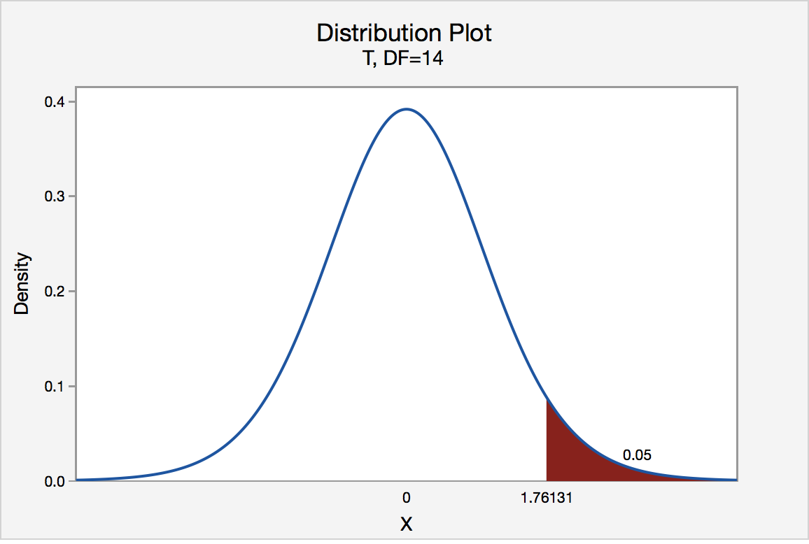
- Type I Error - false-positive; occurs if an investigator rejects a null hypothesis that is actually true in the population
- The models perform equally well, but the A/B test still produces a statistically significant result. As a consequence, you may roll out a new model that doesn’t really perform better.
- You can control the prevalence of this type of error with the p-value threshold. If your p-value threshold is 0.05, then you can expect a Type I error in about 1 in 20 experiments, but if it’s 0.01, then you only expect a Type I error in only about 1 in 100 experiments. The lower your p-value threshold, the fewer Type I errors you can expect.
- Type II Error - false-negative; occurs if the investigator fails to reject a null hypothesis that is actually false in the population
- The new model is in fact better, but the A/B test result is not statistically significant.
- Your test is underpowered, and you should either collect more data, choose a more sensitive metric, or test on a population that’s more sensitive to the change.
- Type S error (sign error): the A/B test shows that the new model is significantly better than the existing model, but in fact the new model is worse, and the test result is just a statistical fluke. This is the worst kind of error, as you may roll out a worse model into production which may hurt the business metrics.
- Type M error (magnitude error): the A/B test shows a much bigger performance boost from the new model than it can really provide, so you’ll over-estimate the impact that your new model will have on your business metrics.
- False Positive Rate (FPR) - alpha(α); Probability of a type I error; Pr(measured effect is significant | true effect is “null”)
- FPR = v / m0
- v: number of times there’s a false positive
- m0: number of non-significant variables
- FPR = v / m0
- False Discovery Rate (FDR) - Pr(measured effect is null | true effect is significant)
- FDR = απ0 / [απ0 + (1 − β)(1 − π0)]
- π0: true nulls, 1−π0: true non-nulls
- FDR = απ0 / [απ0 + (1 − β)(1 − π0)]
- Power - 1-β where beta is the Probability of a type II error
- 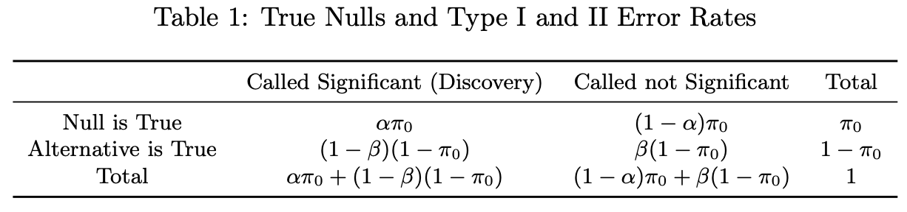
- Family-Wise Error Rate (FWER) - the risk of at least one false positive in a family of S hypotheses.
- e.g. using the same data and variables to fit multiple models with different outcome variables (i.e. different hypotheses)
- FWER = v / R
- v: number of times there’s a false positive
- R: number of times we claim β ≠ 0
- Romano and Wolf’s correction
- Accounting for the dependence structure of the p-values (or of the individual test statistics) produces more powerful procedures than Bonferroi and Holms. This can be achieved by applying resampling methods, such as bootstrapping and permutations methods.
- Permutation tests of regression coefficients can result in rates of Type I error which exceed the nominal size, and so these methods are likely not ideal for such applications
- See Stata docs of the procedure
- Packages
- {wildrwolf}: implements Romano-Wolf multiple-hypothesis-adjusted p-values for objects of type fixest and fixest_multi from the fixest package via a wild cluster bootstrap.
- Accounting for the dependence structure of the p-values (or of the individual test statistics) produces more powerful procedures than Bonferroi and Holms. This can be achieved by applying resampling methods, such as bootstrapping and permutations methods.
Bootstrapping
- Misc
- Post-Hoc Analysis, general >> Frequentist >> Bootstrapping
- Do NOT bootstrap the standard deviation (article)
- bootstrap is “based on a weak convergence of moments”
- if you use an estimate based standard deviation of the bootstrap, you are being overly conservative (i.e. you’re overestimating the sd and CIs are too wide)
- bootstrapping uses the original, initial sample as the population from which to resample, whereas Monte Carlo simulation is based on setting up a data generation process (with known values of the parameters of a known distribution). Where Monte Carlo is used to test drive estimators, bootstrap methods can be used to estimate the variability of a statistic and the shape of its sampling distribution
- Use bias-corrected bootstrapped CIs (article)
- “percentile and BCa methods were the only ones considered here that were guaranteed to return a confidence interval that respected the statistic’s sampling space. It turns out that there are theoretical grounds to prefer BCa in general. It is “second-order accurate”, meaning that it converges faster to the correct coverage. Unless you have a reason to do otherwise, make sure to perform a sufficient number of bootstrap replicates (a few thousand is usually not too computationally intensive) and go with reporting BCa intervals.”
- Packages
- {rsample}
- {DescTools::BootCI}
bootandboot.ci
- Steps
- Resample with replacement
- Calculate statistic of resample
- Store statistic
- Repeat 10K or so times
- Calculate mean, sd, and quantiles for CIs across all collected statistics
- Bayesian Bootstrapping (aka Fractional Weighted Bootstrap)
- Misc
- Notes from
- Packages
- {fwb}
- Description
- Doesn’t resample the dataset, but samples a set of weights from the Uniform Dirichlet distribution and computes weighted averages (or whatever statistic)
- Weights sum to ‘n’ but may be non-integers
- Each row gets a frequency weight based on the number of times they appear
- In this way, every row is included in the analysis but given a fractional weight that represents its contribution to the statistic
- In a traditional bootstrap, some rows of data may not be sampled and therefore excluded from the calculation of the statistic
- Particularly useful with rare events, where a row excluded from a traditional bootstrap sample might cause the whole estimation to explode (e.g., in a rare-events logistic regression where one sample has no events!)
- In a traditional bootstrap, some rows of data may not be sampled and therefore excluded from the calculation of the statistic
- Should be faster and consume less RAM
- Python implementation
- Misc
def classic_boot(df, estimator, seed=1):
df_boot = df.sample(n=len(df), replace=True, random_state=seed)
estimate = estimator(df_boot)
return estimate
def bayes_boot(df, estimator, seed=1):
np.random.seed(seed)
w = np.random.dirichlet(np.ones(len(df)), 1)[0]
result = estimator(df, weights=w)
return result
from joblib import Parallel, delayed
def bootstrap(boot_method, df, estimator, K):
r = Parallel(n_jobs=8)(delayed(boot_method)(df, estimator, seed=i) for i in range(K))
return r
s1 = bootstrap(bayes_boot, dat, np.average, K = 1000)Fundamentals
- geometric mean
summarize_revenue <- function(tbl) {
tbl %>%
summarize(geom_mean_revenue = exp(mean(revenue)),
n = n())
}- Skewness
- packages: moments (basic), e1071 (3 alg options) DescTools::Skew(same algs but with bootstraps CIs)
- From the paper referenced in e1071, b1 (type 3) is better for non-normal population distributions and G1 (type 2) is better for normal population distributions
- Symmetric: Values between -0.5 to 0.5
- Moderated Skewed data: Values between -1 and -0.5 or between 0.5 and 1
- Highly Skewed data: Values less than -1 or greater than 1

- packages: moments (basic), e1071 (3 alg options) DescTools::Skew(same algs but with bootstraps CIs)
- Kurtosis
- A high kurtosis distribution has a sharper peak and longer fatter tails, while a low kurtosis distribution has a more rounded peak and shorter thinner tails.
- packages: moments, e1071

- Mesokurtic: kurtosis = ~3
- Examples: normal distribution. Also binomial distribution when p = 1/2 +/- sqrt(1/12)
- Leptokurtic: This distribution has fatter tails and a sharper peak. Excess kurtosis > 3
- Examples: Student’s t-distribution, Rayleigh distribution, Laplace distribution, exponential distribution, Poisson distribution and the logistic distribution
- Platykurtic: The distribution has a lower and wider peak and thinner tails. Excess kurtosis < 3
- Examples: continuous and discrete uniform distributions, raised cosine distribution, and especially the Bernoulli distribution
- Excess Kurtosis is the kurtosis value - 3
- Understanding CI, sd, and sem Bars (article)
- P-values test whether the sample means are different from each other
- sd bars: Show the population spread around each sample mean. Useful as predictors of the range of new sample.
- Never seen these and it seems odd to mix a sample statistic with a population parameter and that the range is centered on the sample mean (unless the sample size is large I guess).
- s.e.m. is the “standard error of the mean” (See Terms)
- In large samples, the s.e.m. bar can be interpreted as a 67% CI.
- 95% CI ≈ 2 × s.e.m. (n > 15)
- Figure 1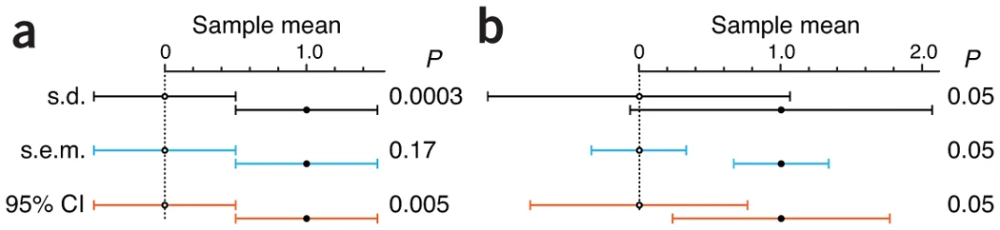
- Each plot shows 2 points representing 2 sample means
- Plot a: bars of both samples touch and are the same length
- sem bars intepretation: Commonly held view that “if the s.e.m. bars do not overlap, the difference between the values is statistically significant” is NOT correct. Bars touch here but don’t overlap and the difference in sample means is NOT significant.
- Plot b: p-value = 0.05 is fixed
- sd bar interpretation: Although the means differ, and this can be detected with a sufficiently large sample size, there is considerable overlap in the data from the two populations.
- sem bar intepretation: For there to be a significant difference in sample means, sem bars have to much further away from each other than there just being a recognizable space between the bars.
- Figure 2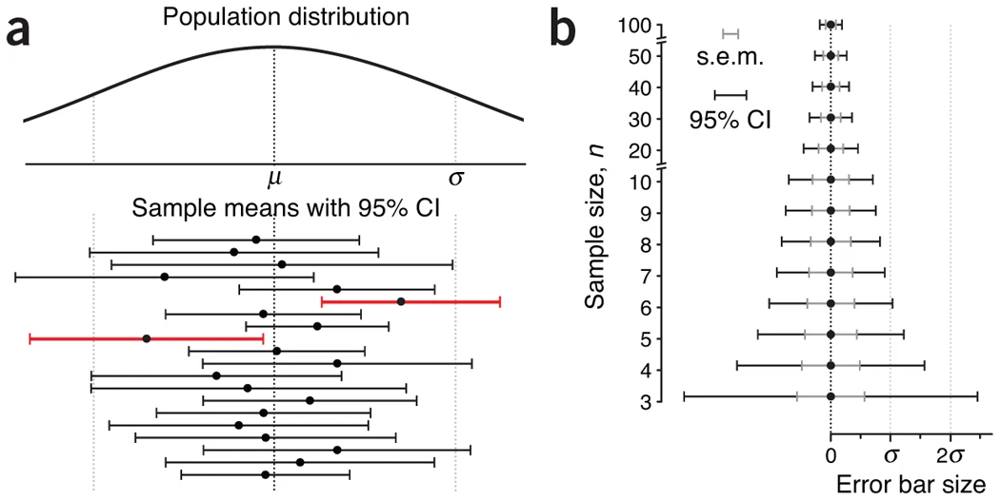
- Plot a: shows how a
- 95% CI captures the population mean 95% of the time but as seen here, only 18 out of 20 sample CIs (90%) contained the population mean (i.e. this is an asymptotic claim)
- A common misconception about CIs is an expectation that a CI captures the mean of a second sample drawn from the same population with a CI% chance. Because CI position and size vary with each sample, this chance is actually lower.
- Plot b:
- Hard to see at first but the outer black bars are the 95% CI and the inner gray bars are the sem.
- Both the CI and sem shrink as n increases and the sem is always encompassed by the CI
- Plot a: shows how a
- Figure 3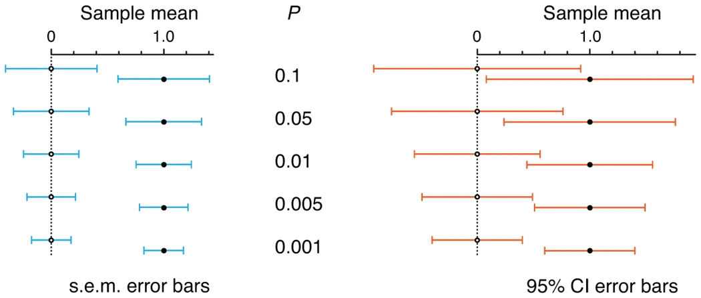
- sem bars must be separated by about 1 sem (which is half a bar) for a significant difference to be reached at p-value = 0.05
- 95% CI bars can overlap by as much as 50% and still indicate a significant difference at p-value = 0.05
- If 95% CI bars just touch, the result is highly significant (P = 0.005)
P-Value (aka Confidence Interval) Function
Notes from https://ebrary.net/72024/health/value_confidence_interval_functions
concurve PKG creates these curves
Gives a more complete picture than just stating the p-value (strength and precision of the estimate)
- Shows level of precision of the point estimate via shape of the curve
- narrow-based, spikey curves = more precise
- Visualizes strength of the effect along the x-axis. Helps in showing “significant” effect is not necessarily a meaningful effect.
- Shows level of precision of the point estimate via shape of the curve
Shows other estimate(s) that are also consistent with that p-value
Shows p-values associated with other estimates for the Null Hypothesis
- see the end of the article for discussion on using this fact in an interpretation context
The P-value function is closely related to the set of all confidence intervals for a given estimate. (see example 3)
Example 1
- 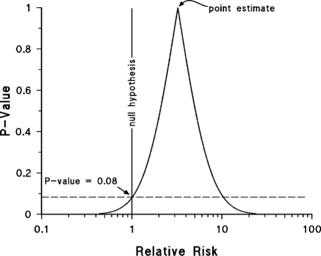
- p-value of the point estimate is (always?) 1 which says, “given a null hypothesis =
is true (i.e. the true risk ratio = ), the probability of seeing data produce this estimate or this estimate with more strength (ie smaller std error) is 100%.” - I.e. the pt est is the estimate most compatible with the data.
- This pval language is mine. The whole “this data or data more extreme” has never sit right with me. I think this is more correct if my understanding is right.
- The pval for the data in this example is at 0.08 for a H0 of 1. So unlikely, but typically not unlikely enough in order to reject the null hypothesis.
- A pval of 0.08 is identical for a pt est = 1 or pt est = 10.5
- Wide base of the curve indicates the estimate is imprecise. There’s potentially a large effect or little or no effect.
- p-value of the point estimate is (always?) 1 which says, “given a null hypothesis =
- 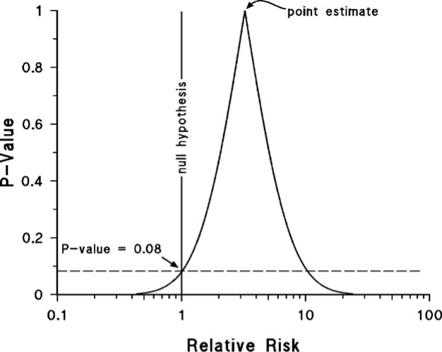
Example 2
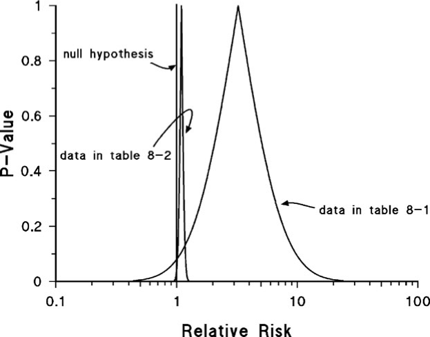
- more data used for the second curve which indicates a precise point estimate.
- pt est very close to H0
- pval = 0.04 (not shown in plot)
- so the arbitrary pval = 0.05 threshold is passed and says a small effect is probably present
- Is that small of an effect meaningful even if it’s been deemed statistically present?
- In this case a plot with the second curve helps show that “statistically significant” doesn’t necessarily translate to meaningful effect
Example 3
- 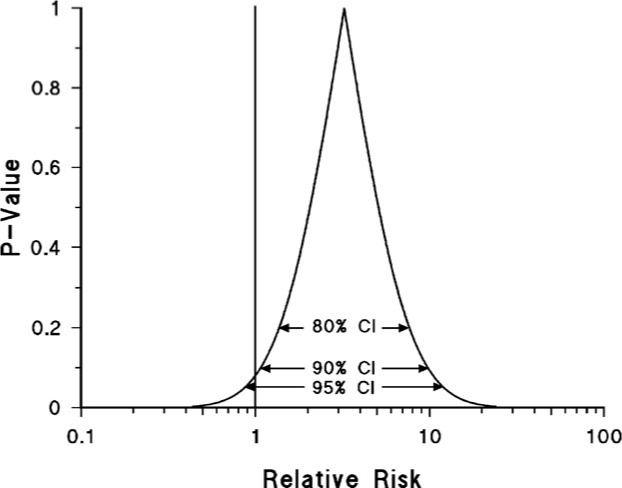
- The different confidence intervals reflect the same degree of precision (i.e. the curve width doesn’t change when moving from one CI to another).
- The three confidence intervals are described as nested confidence intervals. The P-value function is a graph of all possible nested confidence intervals for a given estimate, reflecting all possible levels of confidence between 0% and 100%.
- 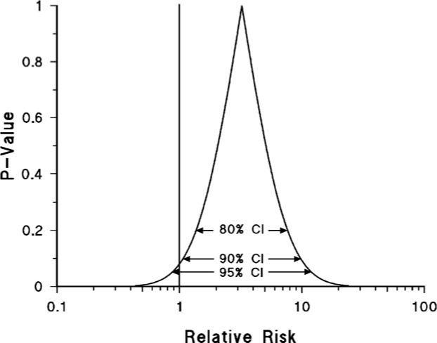